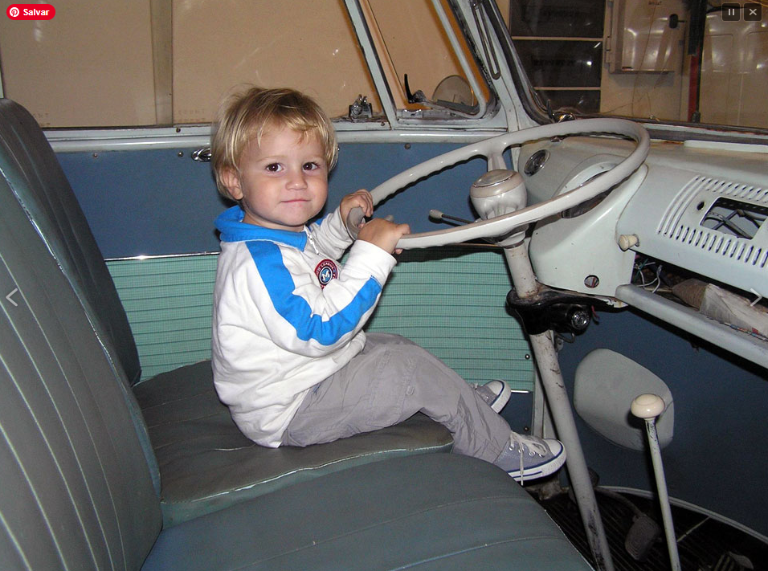
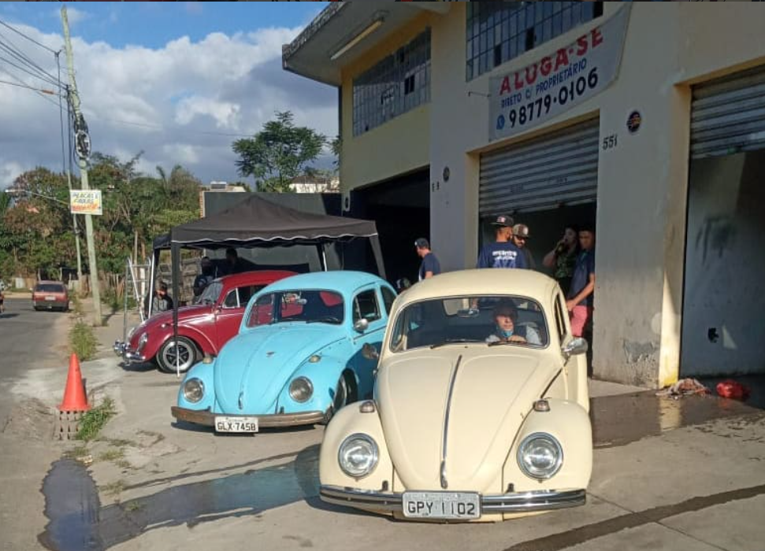
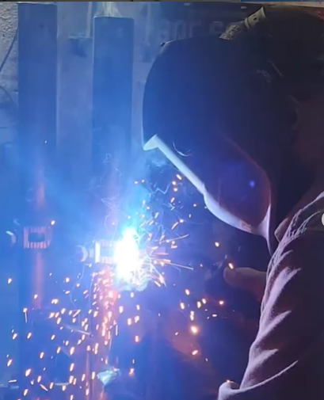
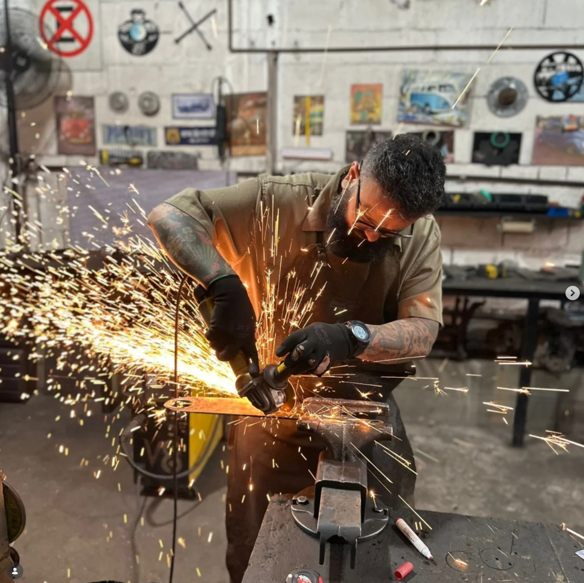
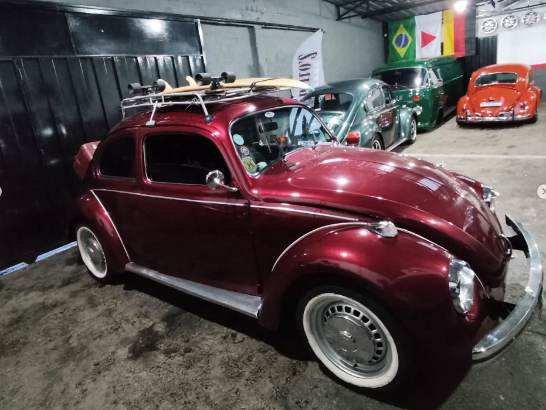
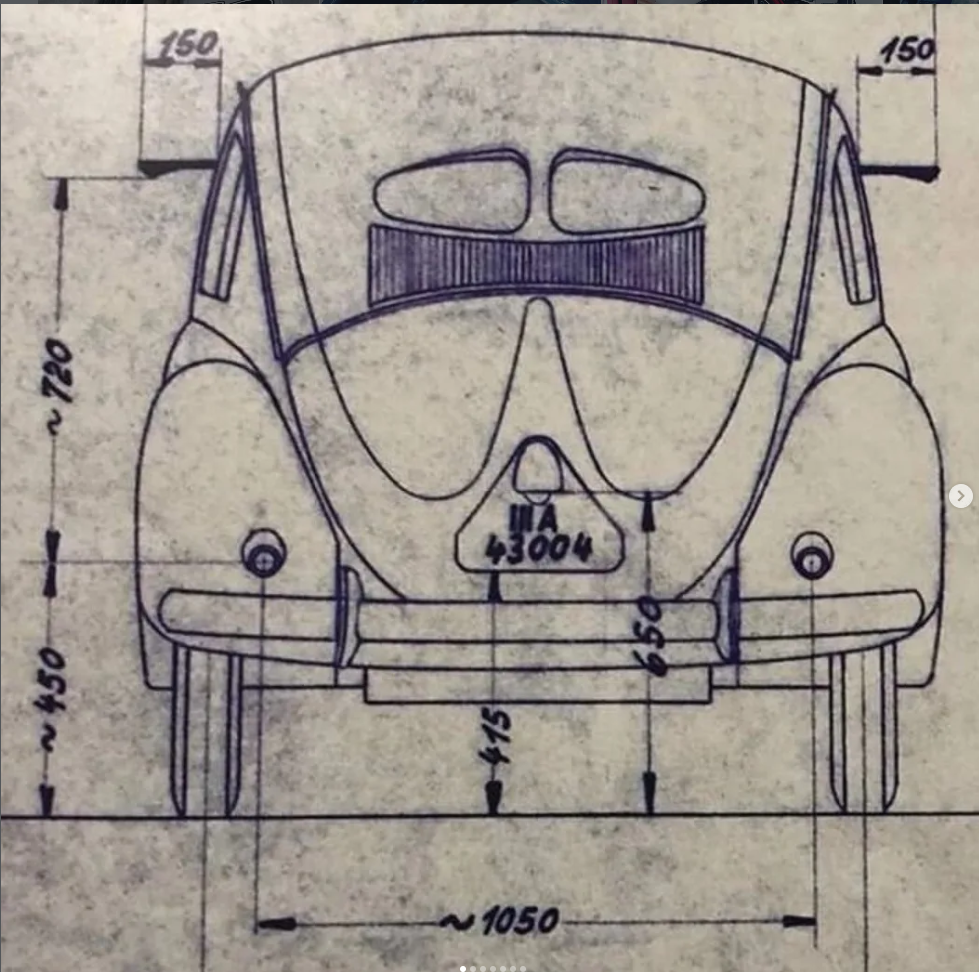

A Semente
do Boxer
A jornada começou nas folgas da direção da kombi do avô. O que era curiosidade de criança virou destino. Cada ferramenta empunhada na garagem de fundo de quintal pavimentou o caminho para a excelência técnica que define a Papito's Garage hoje.



O Mestre
Precisão em cada detalhe

Performance
Construindo o Legado
O Legado
Mundial
A Papito's Garage absorveu o melhor do estilo californiano e da engenharia alemã para criar um padrão de preparação autêntico. Hoje, somos o elo entre a herança histórica mundial e a performance extrema exigida nas ruas.

